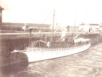
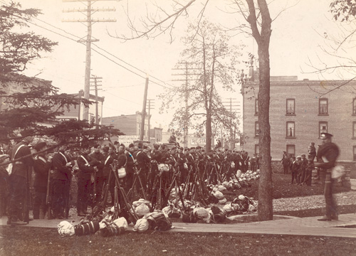
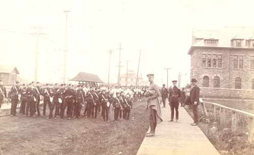

Home • Before Clergue • The Arrival • The Personality • Block House • Montfermier • Industrialization Process
Discovery Week • Collapse of the Empire • Rebirth • Clergue Letters
Collapse of the Clergue Empire
Indications of impending financial disaster within the Clergue empire appeared early in the history of the Allied Companies. The cracks in the façade became evident at a point in time when, as a result of its numerous construction projects, the company appeared to be entering a phase of great wealth and prestige. In fact, the multitude of simultaneously ongoing construction projects drained the coffers. The Board of Directors expressed concern at the shortage of working capital after reviewing financial reports compiled by Edward Varian Douglas, the president of the various Companies. They appointed a comptroller in the person of J.S. Wynn in March of 1902 to enforce a policy of stringent control over all capital and non-capital expenditures of the officers of the various companies. Wynn, in an attempt to avert disaster, ordered that all of the construction work of the Companies be stopped forthwith. His order brought all construction to a sudden and abrupt halt including the laying of track.
Members of the Board of Directors secured a loan in New York to ease the immediate financial situation of the Allied Companies, but despite this infusion of money, the situation continued to deteriorate. The money was used to pay down the mounting indebtedness, leaving virtually nothing to meet the day-to-day and future needs of the Companies. In other words, the creditors may have been temporarily satisfied but the financial crisis had not been resolved. The loan not only placed the Companies further in debt but also resulted in a drop in the value of the stock of the Consolidated Lake Superior Corporation on the stock exchange.
In December of 1902, the New York banking firm of Speyer and Company agreed to loan the imperiled Consolidated an additional $3.5 million. Unlike previous lending institutions, however, Speyer attached conditions to the loan. First, only $1.5 million of the total loan could be used to pay down the indebtedness and expenditure of the remaining $2 million would be supervised by representatives of Speyer and Company. Furthermore, Speyer retained the right to replace any or all of the directors of the Consolidated and it insisted that all of the assets and securities of each of the subsidiaries be assigned to Speyer. Although the terms were harsh, the Board of Directors accepted given their desperate need for cash.
 Clergue's yacht the "Siesta" |
Needless to say, it took Speyer very little time to replace several directors with directors of its own choosing. A trustee was also appointed by yet another creditor, Central Trust of New York, in the person of Benjamin F. Fackenthal. When the Consolidated continued to experience financial difficulties in the late Fall of 1902 despite the presence of a trustee and compliance with the conditions imposed by Speyer, the Consolidated again turned to Speyer, this time for a loan in the amount of $1.75 million. Speyer refused to grant any additional monies but did extend the date for repayment of the original loan until July, 1903. This time the lending institution imposed the harshest of all possible terms as a condition of the extension: the balance of the old Board of Directors must resign. Clergue remained as Vice President and General Manager of the Consolidated until the Speyer group requested his resignation in April, 1903. As grounds for the termination of his employment with the Allied Companies and his role as a Board member, Speyer cited Clergue’s refusal to abide by the restrictions which had been placed on discretionary spending and his extravagance, which included the acquisition of a company yacht, the "Siesta". |
Speyer installed Cornelius Shields, previously president of Dominion Coal, as the new President of the Allied Companies in July of 1903. One of Shields’ first acts as president was to move the operating, financial and accounting operations from Philadelphia to Sault Ste. Marie so that he could personally monitor the activities of the Companies. Unfortunately, Shields died suddenly and unexpectedly in July of 1904 before he could effect any lasting changes on the Companies.
When the debt owed to Speyer came due in July, 1903, the Consolidated did not have the funds necessary to repay the loan. The Finance Committee, which had been created as part of the Speyer restructuring process, decided that a bond issue was the most appropriate way to raise the necessary funds. The Board of Directors of the Consolidated granted the Finance Committee broad powers to raise all of the necessary monies and to negotiate with Speyer and Company. In the opinion of the Committee, if it could raise $7.5 million then it could not only pay off the Speyer debt but also have a comfortable balance in the bank for working capital. In the meantime, everything that could go wrong did: the Consolidated needed an additional $2.5 million to meet expenses as of 1 July 1903 and Speyer refused to extend any further credit; the bond issue didn’t get off the ground in a timely fashion and even if it had, Speyer and Company refused to go along with the Finance Committee’s plan to repay the loan that had been made by that banking institution. The Consolidated defaulted on its loan payment. In spite of the default position, Speyer and Company didn’t take immediate steps to foreclose on the company based on an unwritten agreement that the securities pledged by the Company would not be sold any time before 15 September 1903.
By 17 September 1903, the Company had reached the end of the line. It had no money to meet the payroll or daily operating expenses and default proceedings were imminent. All facets of the Consolidated’s operations except for the Tagona Water and Light Company, the street railway and the weekly service on the Algoma Central Railway were closed.
Word of the financial situation of the Consolidated spread quickly. Unpaid lumber workers and construction workers began to walk into town along the ACR. A second group of local industrial workers began to form near the steel plant. The two groups met together on the morning of 27 September 1903 and began moving en masse towards the General Office of the Consolidated on Huron Street. The men, many of whom were armed, surrounded the General Office. They hurled bricks, stones and anything else that came to hand at the building, breaking all of the windows in the process. One group of men gained access to the building where they demolished furniture and records. In an attempt to staunch the spread of the rioting, streetcar service was terminated, all local bars were closed and the ferry was sent to the American side of the River. Local police with the aid of Company police and armed citizens cordoned off the International Hotel and other properties belonging to the Company. When the mayor read the Riot Act without any effect, the local militia mustered its troops. A special train was sent to Thesssalon to bring in ten reinforcements. When an enquiry was received from military headquarters in Toronto regarding the state of affairs in Sault Ste. Marie, Lt. Col. Elliott wired back that he was expecting more trouble as additional workers were making their way into town. By nightfall, however, all was quiet. The riot had run its course. Local citizens provided the out-of-town rioters with food and lodging.
 Militia arriving in Sault Ste. Marie, 1903 |
 Militia guarding the consolidated |
The following morning 362 soldiers arrived from Toronto. They were well-equipped with horses and ammunition. Unfortunately, they had not brought any food with them nor had they made any provision for accommodation. Despite the fact that their services were not required, the soldiers were billeted at the International Hotel for three days. They patrolled the streets and surveyed the aftermath of the riot but fulfilled no viable function. The debate as to where the responsibility for the payment of the expenses incurred in transporting and billeting these soldiers rested raged between the municipal government and the military for several years. The municipality steadfastly refused to pay for military assistance it had not requested and ultimately the military wrote the account off as a bad debt.
No sooner had the troops returned to Toronto than Clergue arrived back in Sault Ste. Marie. As a member of the Finance Committee, he had approached Traders Bank, the Imperial Bank and the Bank of Commerce for loans. He succeeded in borrowing sufficient funds to pay the long overdue payroll, thereby appeasing the workers and staving off any further unrest.
Speyer and Company proceeded to foreclose on the mortgages. They appointed Benjamin Fackenthal as the receiver. Through the lawyer retained by the receiver to take physical possession of the assets of the Consolidated, Speyer and Company issued notice of intention to sell the assets and properties.
Parties opposing the actions of Speyer and Company immediately mobilized. On 25 September 1903, Senator Raoul Dandurand of Montreal, a long-time supporter of Clergue and his industrial enterprises, made a conditional offer to purchase the entire assets of the Consolidated for $1 million plus costs. The condition in this case hinged upon Dandurand’s ability to secure the necessary funding to complete the purchase. Then, when the Receiver attended at court to obtain an order enabling him to take possession of the assets and properties of the Consolidated for the purpose of selling them, his application was countered with an injunction preventing the sale. The application for the injunction stated that Speyer and Company had failed to provide sufficient notice of intention of sale. The injunction, like the option obtained by Senator Dandurand, proved to be successful stalling tactics. Speyer and Company agreed to postpone the sale of the assets and properties of the Consolidated.
Speyer and Company did, however, take control of each of the subsidiary companies. The action generated widespread fear that this was merely the first step in a take over of the Allied Companies by U.S. Steel. The federal and provincial governments, both of whom had invested considerable time and money in the development of the industries, agreed to work together to protect them from an American takeover. As the senior levels of government worked at the development of a mutually beneficial financial plan, Clergue and Senator Dandurand traveled to Great Britain in an attempt to interest British financiers. They returned empty handed.
The Speyer representatives took possession of the assets and properties of the Consolidated on 15 December 1903. The securities deposited with Speyer were auctioned for $4.5 million. The only bidder – and consequently the purchaser – was Speyer and Company. Clergue had permanently lost control of the network of industries he had developed in Sault Ste. Marie.